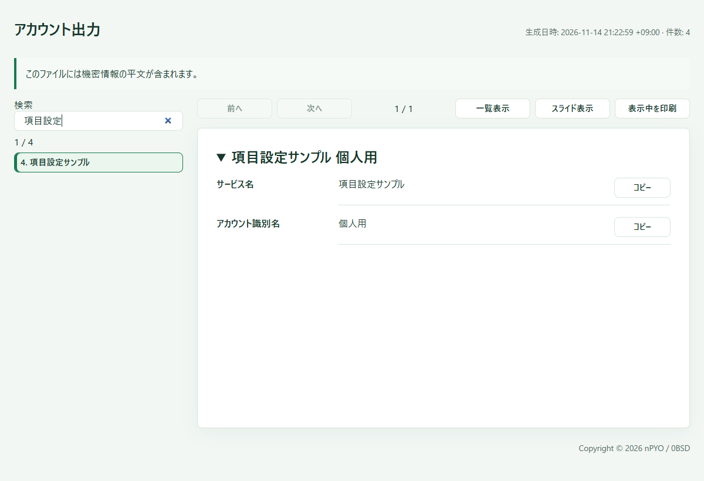
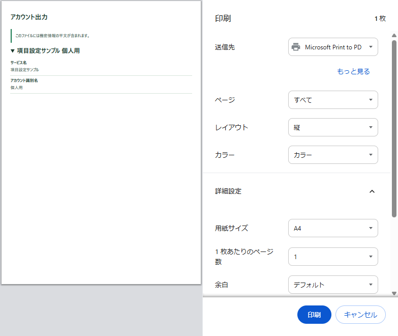
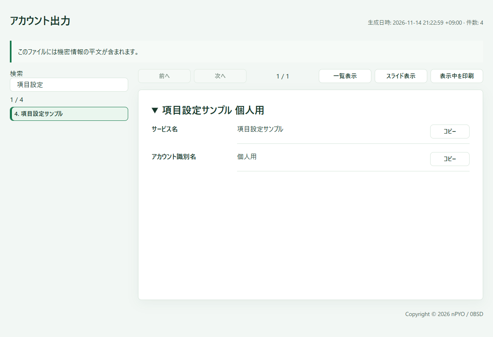

44HTMLを印刷
出力したHTMLを検索で絞り、ブラウザーの印刷プレビューで内容と枚数を確認します。
手順一覧を開く（3手順）
1印刷する対象を絞る
検索で印刷対象を絞り、［表示中を印刷］を押します。例は4件中「項目設定」の1件です。

2印刷プレビューを確認する
ブラウザーの印刷画面で内容と枚数を確認します。例は1枚です。この実例では印刷せず［キャンセル］を押します。

3閲覧画面へ戻る
キャンセルすると検索条件を保った閲覧画面へ戻ります。
